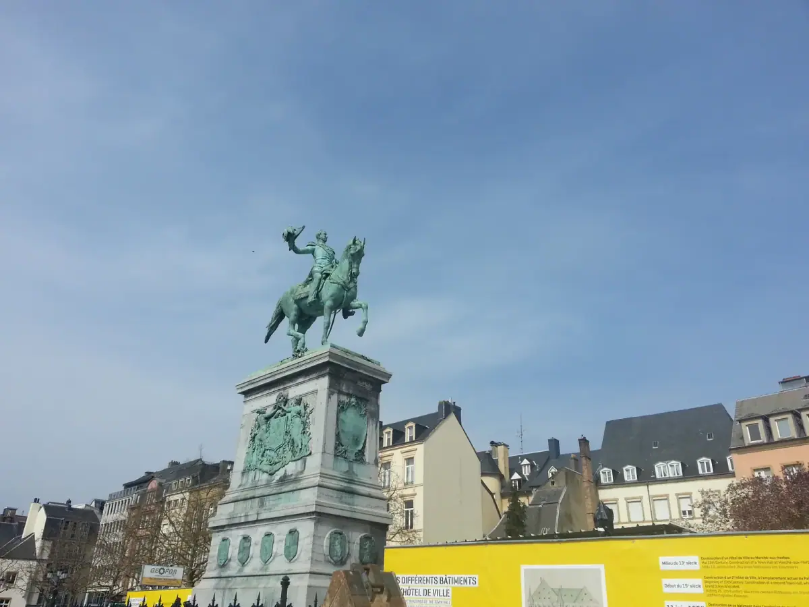
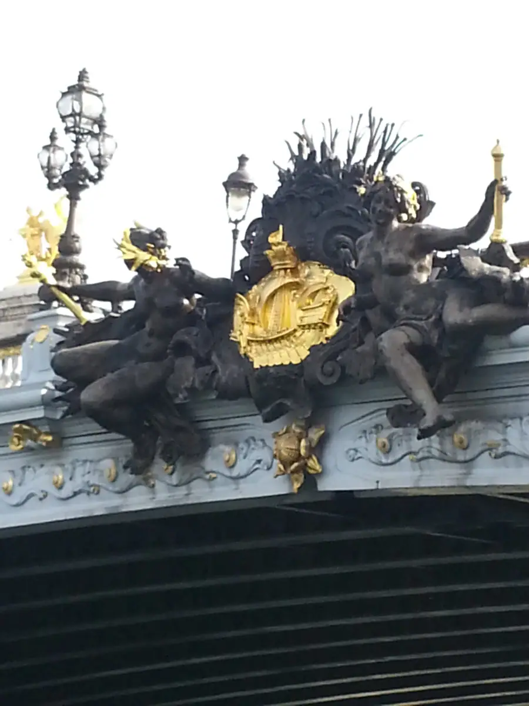
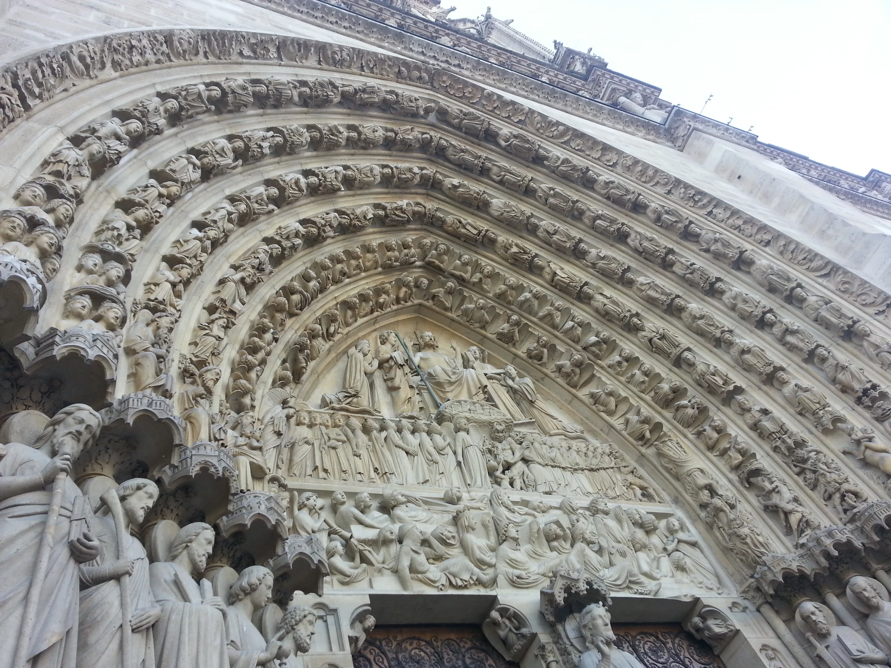
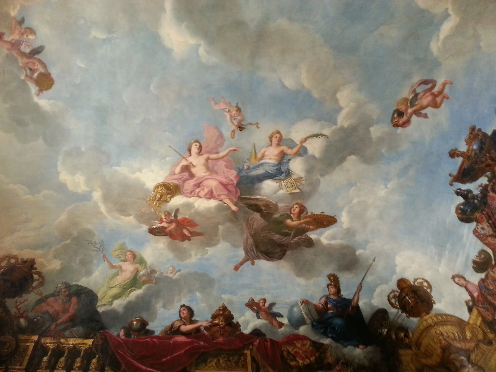
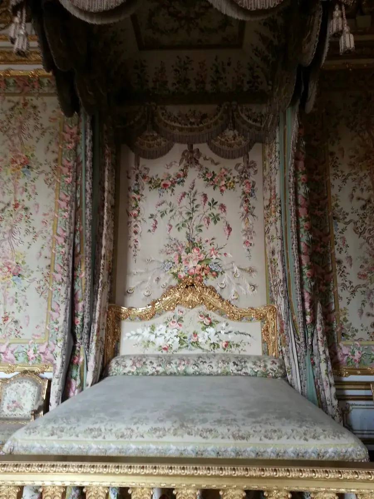
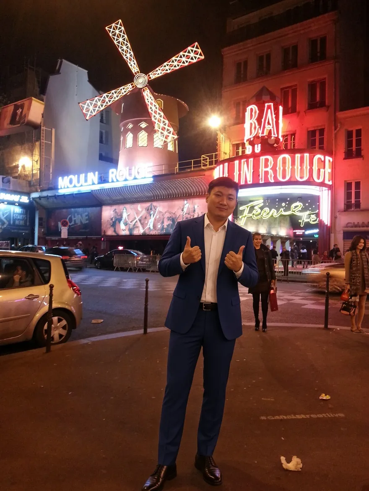
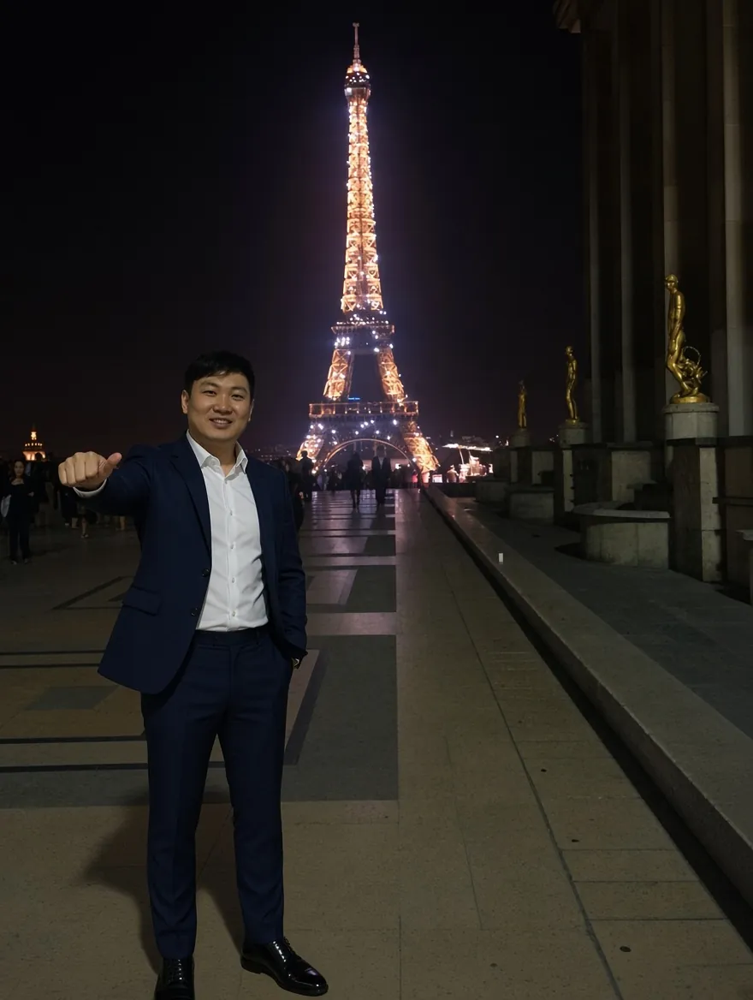

巴黎给我的一课：什么该坚守，什么该改变
Paris Taught Me a Lesson: What to Preserve and What to Change

2015年去巴黎考察，巴黎圣母院和卢浮宫，一直留在我的记忆里。
当时，我看到的还是那座尚未经历火灾的巴黎圣母院。后来，2019年的一场大火改变了它的命运；而卢浮宫旁那座曾经引发争议的玻璃金字塔，则让我看到另一种面对传统的方式。
一座建筑需要尽力恢复历史原貌，另一座古老宫殿却可以容纳大胆的现代设计。这两件事放在一起，让我开始思考：面对传统，究竟什么应该坚守，什么又应该改变？
我见过的，是后来烧毁的那个顶
2019 年 4 月 15 日，巴黎圣母院阁楼失火，大火烧穿了教堂的木质屋顶，那座 96 米高的尖塔在几分钟内倒塌。我去的时候，还是那座尖塔矗立在塞纳河畔的样子——现在回头看，那次去，其实是赶上了这座建筑存在了一百五十多年的"最后形态"的一个尾巴。
那座尖塔，其实不是巴黎圣母院最初的样子。它是 19 世纪建筑师维奥莱-勒-杜克（Eugène Viollet-le-Duc）在修复工程里重新设计并加建的，风格式修复理念也是从他这里开始，风靡了整个 19 世纪下半叶的欧洲。而屋顶的木结构，欧洲人称之为"森林"（la forêt），由许多古橡木梁交织而成，不少梁料的树龄可以追溯到中世纪。2019 年那场大火，烧毁的正是这片"森林"。
大火之后，法国启动了修复工程，按照 19 世纪的设计与工艺，重新建造了尖塔和屋顶。2024 年 12 月，圣母院重新向公众开放。
对我来说，巴黎圣母院的故事提醒我们：有些东西的价值，恰恰来自它历经时间留下的痕迹。修复这样的历史建筑，不只是让它重新发挥作用，更要认真判断哪些原有价值值得保留。
放到企业经营中也是一样。品牌一路积累下来的信誉、质量和核心能力，不应该为了追逐短期变化就轻易舍弃。


卢浮宫：一场关于"谁有资格定义传统"的争论
卢浮宫本身始建于 12 世纪末，最初是座防御城堡，历经几百年扩建才变成今天的规模。真正引发关注的，是那座玻璃金字塔——20 世纪 80 年代，法国总统密特朗推动卢浮宫改造，由建筑师贝聿铭设计的玻璃金字塔落在这座古老宫殿的庭院中央。现代设计与古老宫殿的结合，当时曾引发公众争议；而今天，这座金字塔已成为卢浮宫最具辨识度的建筑元素之一。
卢浮宫金字塔让我看到，尊重传统并不意味着拒绝一切新东西。面对一座有着深厚历史积淀的建筑，现代设计当然需要接受审视，但也不能仅仅因为它与过去不同，就认定它不应该出现。
真正值得思考的，不是新设计有没有争议，而是它是否回应了现实需求，是否理解原有环境，又是否为这座建筑带来了新的可能。


一个真正自信的文化，敢让"外来者"来重新定义自己最核心的传统符号——这种自信，比守着传统本身更难得。
——董立鑫 海鑫汇创始人兼执行总裁，新加坡世贸秘书长兼首席运营官
街景：奥斯曼男爵留下的城市轴线
走在巴黎街头，那种笔直、开阔、两侧建筑整齐的林荫大道，是 19 世纪奥斯曼男爵主持的巴黎大改造留下的结果。一座城市要在历史积淀与现代生活之间作出选择，这条城市轴线本身，就是这种选择留下的痕迹。


这一站留下的判断
这两座建筑给企业出海的启发，并不是简单地告诉我们要守旧或创新，而是先把两件事分清楚。
第一，哪些东西不能轻易改变？例如品牌长期积累的信誉、产品质量底线、真正区别于竞争对手的技术和能力。这些是企业进入新市场时仍然需要守住的根本。
第二，哪些东西必须根据市场调整？例如产品如何表达价值、服务如何适应当地客户、通过什么渠道建立信任，以及如何与当地合作伙伴沟通。国内市场有效的方法，不一定可以原样搬到海外。
第三，调整的依据是什么？不是看到竞争对手怎么做就跟着做，也不是为了显得国际化而改变，而是要理解当地客户的需求、市场规则和实际使用场景。
对准备出海的企业来说，真正困难的往往不是决定要不要改变，而是找到改变的边界：既不丢掉自身真正的优势，也不把过去的成功经验当成所有市场都适用的答案。
核心资产：哪些能力、质量标准和品牌承诺，是企业不能轻易放弃的？
市场适配：哪些产品表达、服务方式和沟通渠道，需要根据当地市场调整？
调整依据：每一项改变，是否有真实的客户需求和市场信息作为依据？
本文整理自董立鑫（Bruce Dong）海外产业考察记录，首发于海鑫汇。